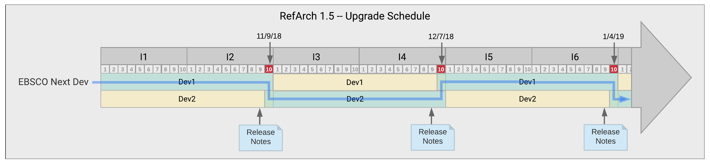

RefArch 1.5 Platform Operating Guidelines¶
As a development team building services on the RefArch1.5 platform prior to GA release, you will be working on the platform as it is evolving. It will be important to follow the guidelines below to minimize disruptions and ensure we upgrade together on a cadence.
Dev Environments¶
- Microservices will be deployed and tested in 2 AWS dev environments to allow for platform improvements in one as active EBSCO Next platform development is going on in the other. In PI12, these will be the only environments available
- Current: Dev teams deploy their microservices to this environment during normal iterations (green below)
- Next: Dev teams may deploy their microservices to this environment in order to test changes required for the next version of the platform (yellow below)
- Current and Next environments will be rotated every other iteration in PI12. We will assess how this period works and adjust as necessary.
- Rotation will be executed with an automated rebuild, blowing away everything in both environments. We do this to ensure we can recreate environments in an automated way.
- Key non-breaking fixes and enhancements will be overlaid onto the Current environment as needed.
Platform Release Schedule¶
- Platform dev teams will release the Next environment by end of day Thursday, before Friday platform upgrade by product dev teams.
Upgrade Schedule
Communication and Support¶
Dev teams will use the resources below for instructions and to raise issues and questions about deployment to the Next version of the platform.
It is important we direct all discussion to the shared Teams channel so issues and solutions are available to all dev teams.
Release Notes:
The Platform Release Notes section of this document will describe project changes required to upgrade to the new version of the platform. This will be complete by end of day Thursday, likely sooner.
Teams room:
The Ref Arch 1.5 Feedback Teams Channel will include a Tab to capture status at various check-ins as well as use of the chat for ongoing issues reporting/progress
Egress from microservices/mesh to external services is managed by submitting a Pull Request to a single repository (TBD). PR’s will be reviewed and executed by “Platform Support.”
Ingress and routing to applications is done with Ambassador gateway (if ready) or by using host header (if not)
Upgrade Day¶
- Friday morning of upgrade day, product dev teams will
- make any required changes to their code repos as identified in the Platform Release Notes
- Perform a deployment
- Deploying to the upgraded Next environment does not require a change to your Jenkinsfile – starting the morning of Upgrade Day, all deployments will be targeted at the new environment.
- There will be a way to override which environment (Dev1/Dev2) you deploy to but this should only be used in special cases in coordination with the Platform development teams.
- Check-ins with EA/PO weill be held at 11am and 3pm and EA will be continuously monitoring the Teams channel to provide support
- EA will monitor teams room throughout the day and provide support
- In the event of an unforeseen problem with the Next environment, EA will make a call whether to fix forward (preferred) or roll back. EA will do their best to have a fix available by early afternoon for teams to react. Target end of day decision (3pm ET) with EA whether to roll back or fix forward.
- POs for teams (both platform dev and product dev) will monitor communication stream to coordinate & prioritize when teams need to address specific issues. (i.e. Set up conf call/MS Teams meeting for breakouts as needed for specific issues).
- Escalations during Upgrade Day should be routed to Aishwariya Bhavan; Seshu Pasam; Nate Baechtold via MS teams Ref Arch 1.5 Feedback channel
- Escalations during Iteration should be routed thru Respective Program team(s) (for prioritization) in addition to Aishwariya Bhavan; Seshu Pasam; Nate Baechtold
- Tracking of Issues:
- Teams to use MS Teams channel to report immediate issues/progress with goal to resolve over the course of the day
- Teams to use Rally team boards to add user stories for issues that teams expect to rollover into next iteration, to be considered in teams Planning meetings
- EPAM: ~2am ET start – end of day (off shore)
- Krishna (EA in India)
- Assist and monitor chat for EPAM to troubleshoot and collect info.
- Provide EPAM handoff at the end of the day to MS Team room, EPAM teams to ensure open communication on individual team rooms
- Local EA/PO to ensure communication back to EPAM teams end of day Friday for Monday morning update including awareness of solutions/remaining open issues
- Krishna (EA in India)
- Local: POs/Team members to monitor the public team room to understand issues, go/no go to start day.
Post Upgrade Day¶
- Cross ART team lessons learned in a consistent and formalized manner after each merge is key. EA to own scheduling the check in the first Monday in iteration 3, to include POs/EA/ADMs and tech leads as appropriate.